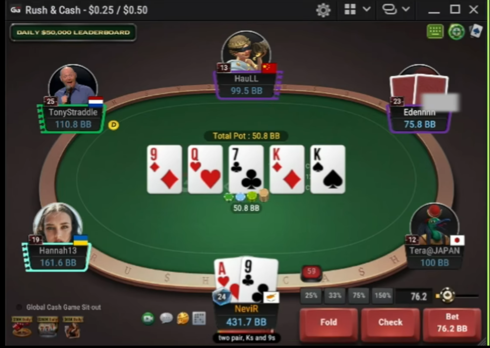
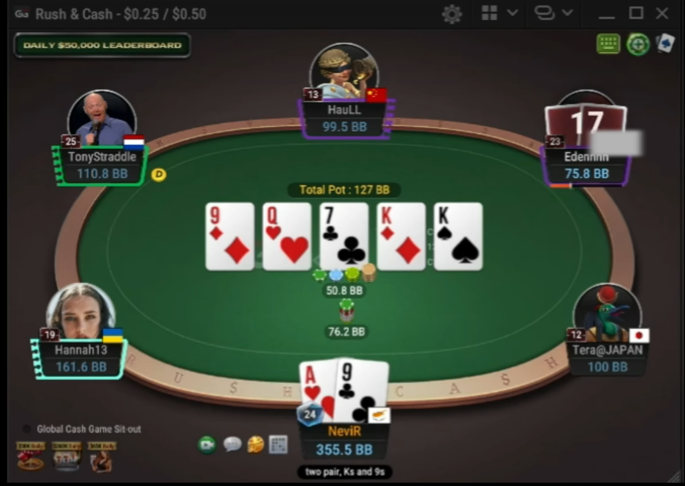
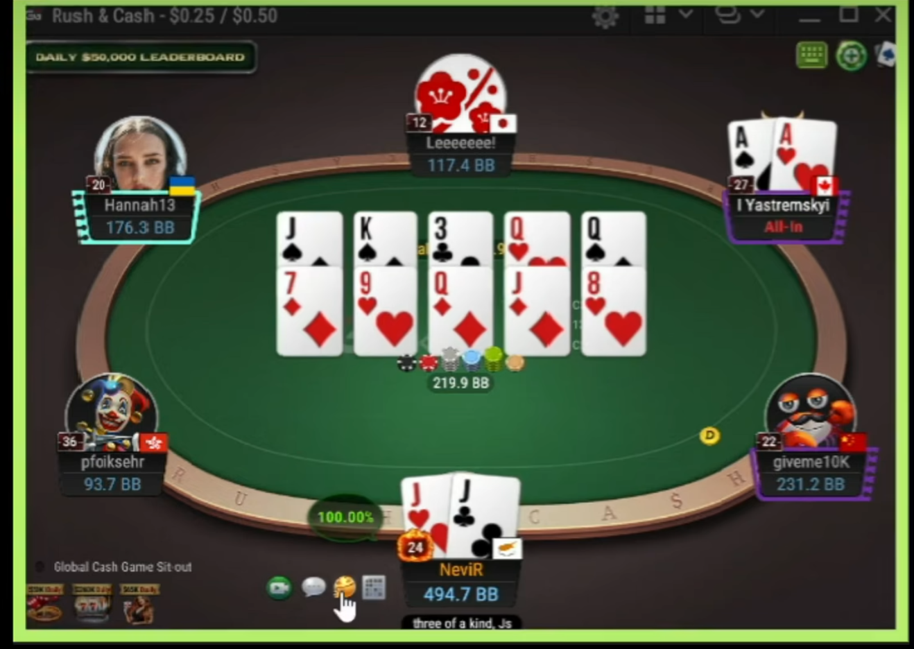

参考端素材｜直接证据



这是一份可审阅、可点击播放的行为规格，不是主题样板。左侧保留参考证据，右侧给出目标结构；所有时间均标注为视频测量或估算。
桌面和手机共用同一信息层级：牌桌是主舞台，右下操作区是唯一行动入口；历史位置标签只属于手牌历史页。



样片只表达时序与相对运动，不代表最终皮肤。用键盘 Tab 也能操作按钮。
| 动画 | 起点 | 路径 / 形变 | 时长 | 缓动 | 关键中间态 | 结束态 | 素材出处 |
|---|---|---|---|---|---|---|---|
| 发公共牌 | 牌堆 | 先平移拉出 3 张 → 翻转最后 2 张 | flop 约 0.47s（视频 4.158–4.628，估读）；单张节拍约 0.14s | decelerate / ease-out | 第 1 张先离堆，三张逐张成行；turn / river 原位翻面 | 五张等距、牌堆不再参与 | 实局视频密集帧；`gg-desktop-真实打牌视频.webm` 约 4.16s |
| 结算筹码 | 各下注堆 / 中央筹码 | 先聚到中心筹码堆，再沿弧线飞向赢家 | 聚拢估算 0.25–0.45s；飞行源码现状 1.70s；整段约 3.8s（现有 token） | 先快后慢，弧线；WIN 延迟入场 | 筹码先从座位下注点消失并聚堆，多个筹码错峰 | WIN 渐变入 → 停留 → 消失；赢家积分最后更新 | 结算 1 / 结算 2；跑马约 30.18–30.92s |
| 思考倒计时 | 当前行动玩家框 | 整个 player frame 白光闪烁，保留倒计时读数 | 30s 行动时钟（产品代码）；白闪约 0.85s 循环（规格估算） | ease-in-out，≤1Hz | 读数变红前，框体仍是主要提醒；临界时可转暖红 | 停止闪烁，留下静态行动态 | 思考截图；视频约 0–4s |
| 跑马 | Split Options 面板 | 询问 → 确认 → `Let's Run It Twice!` → 多行公共牌 | 面板停留：视频约 16.5–21.0s；确认后首次牌约 21.5–24.5s（均为视频测量） | 面板 ease-out；牌按节拍推入 | 实时胜率气泡随牌面更新；两行 board 同宽同节拍 | 两轮各自结算，再合并结果 | Split Options、双跑、跑马视频 |
| 下注 | 玩家框 / 下注来源 | 筹码推出到下注点；金额滚动与滑动条同步 | 推出估算 0.48s（现有 `BetFlight`）；滚轮每格即时 | ease-out | 鼠标悬停 slider 可滚轮；金额、range、快捷比例保持同一状态 | 筹码堆落位，操作按钮保持右下 | 下注动画 / 下注区 |
| 优先级 / 难度 | 偏差 | 参考端做法（素材） | 我们现状（代码核实） | 修复建议 |
|---|---|---|---|---|
| P0 S | 公共牌视觉时序 | 水平拉出 flop，最后两张翻面 | TablePage.tsx:2237–2269 已传 `index<3 ? slide : flip`；DealCard.tsx:96–101 的 slide 仍按牌堆到槽位的 dx/dy 位移，牌堆位于上方时会产生下落观感。 | 将 flop 的路径约束为横向 push / 明确 deck-to-row 的中间轨迹，并用视频帧验收。 |
| P0 S | 结算缺少“先聚堆”节拍与 WIN 延迟 | 筹码成堆后飞向赢家，WIN 在末段出现 | WinnerFx.tsx:136–205 只有 pot → winner 的 ChipFlight；RoundTable.tsx:1089–1093 的 `WinBadge` 随 `p.won` 同时渲染。现有飞行 1.7s，整体 token 3.8s。 | 增加 collect beat；WinBadge 按结算时间轴挂载，且结束自动卸载。 |
| P0 M | 下注区货币语义与参考图不一致 | 右下暗红 Fold / Check / Bet；快捷比例在上，slider 和滚轮联动 | 位置已是 TablePage.tsx:1369 的 bottom-right；BettingPanel.tsx:524–550 已实现 range `onWheel`；但显示由 `prefs.stackUnit` 二选一，BB 不是始终后缀，视觉按钮当前由 token 走金色 raise CTA。 | 纯数字积分；BB 模式统一带 `BB`；右下红色动作组和 hover/wheel affordance 对齐。 |
| P1 M | 行动高亮不是“整个框闪白” | 玩家框白闪，金色环作为辅助 | table-motion.css:103–123 只在 avatar ring 上 glow，table-pod.css:337 仅改 border-color。 | 给 `.table-pod-card--acting` 增加白光伪层/outline flash，保留 reduced-motion 静态边框。 |
| P1 M | 跑马实时胜率气泡缺失 | 公共牌推进时每个玩家附近有实时百分比 | 目标代码搜索未发现 `equity` 气泡渲染；仅有多跑提示与 outcome 文本。 | 绑定服务端每阶段 equity；气泡固定在 seat 内侧，避免挤压牌桌几何。 |
| P1 M | 头像 / 等级 / 国旗裁决 | 素材有头像、等级角标、部分画面有旗帜 | 产品有头像框、role badge 与 bot badge；项目裁决明确国旗不做（`docs/plans/2026-10-06-gg-table-reference.md:27`）。 | 不新增国旗；等级 badge 可保留为产品自己的信息层。 |
| P2 L | 中央信息层 | Total Pot 胶囊、赛事信息列、桌沿 watermark / 顶部 leaderboard | pot 已是 `table-pot-pill`，但样式 token 为金色，赛事信息与参考图不完全同构；桌面水印/顶部条需逐项确认。 | 优先改颜色关系和信息优先级，不移动已通过碰撞验证的座位几何。 |
| P2 L | 多跑牌面布局 | 翻前六人，翻后单挑；两行 board 保持同宽 | 已按 `hand.boards` 渲染多行，每行 5 槽；`runSize` 与手机 clamp 已存在。 | 不重做几何；补跑马胜率气泡、牌的层次与时序验收。 |
结论：用户说“仍然从上往下落下三张”基本成立，但不是因为调用方缺少 slide。
结构只保留语义：.table / .seat / .board / .panel / .timeline。主题只替换 CSS custom properties，交互和动画不复制。
[data-theme="green"] → felt / accent / border
[data-theme="red"] → felt / accent / border